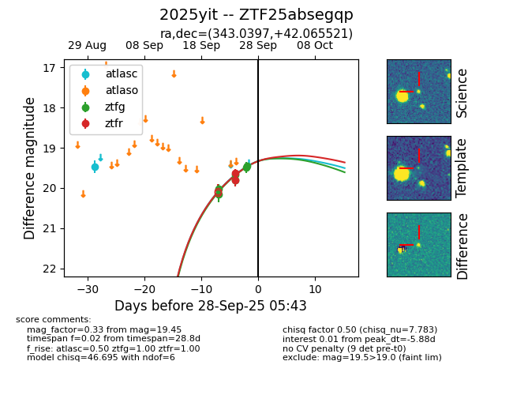
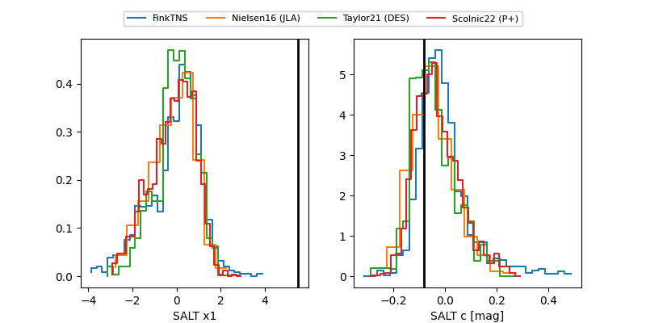

FINK: ZTF25absegqp
Lasair: ZTF25absegqp
ALeRCE: ZTF25absegqp
TNS: 2025yit
YSE: 2025yit
ZTF25absegqp (ztf,fink)
2025yit (tns,yse)
equatorial (ra, dec) = (343.0397,+42.06552)
galactic (l, b) = (100.4028,-15.52902)


last atlasc=19.47, ztfg=19.45, ztfr=19.62
1 atlasc, 6 ztfg, 2 ztfr detections